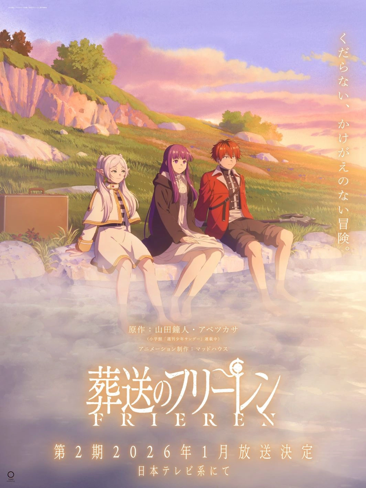

Después de derrotar al Rey Demonio, el grupo de héroes se separa y
el mundo entra en una era de paz. Frieren, una maga elfa con una
vida casi eterna, se despide de sus compañeros humanos sin
comprender del todo el valor del tiempo compartido. Décadas más
tarde, al asistir al funeral de Himmel, su antiguo camarada,
Frieren se enfrenta al peso de los recuerdos y a la soledad que
conlleva su longevidad. Impulsada por el deseo de entender mejor a
los humanos y lo que significó su viaje anterior, Frieren emprende
una nueva travesía. Acompañada por Fern, su aprendiz, y Stark, un
joven guerrero, recorre los mismos caminos que una vez transitó,
enfrentando desafíos mágicos y emocionales. En este viaje,
descubre que la verdadera aventura no es vencer al mal, sino
aprender a conectar con los demás y valorar cada momento.
-> Enlace a la Wiki

¡Segunda Temporada Confirmada!
| Información General | |
|---|---|
|  | Fecha de estreno: Enero 2026 |
| Episodios: 24 capítulos (estimado) | |
| Arcos:Se adaptaran posiblemente los arcos narrativos del manga que continúan el viaje hacia el norte, incluyendo el Arco de la Tierra Dorada y el Arco del Monumento a la Diosa | |
| Equipo de Producción | |
| Dirección y Música | Director: Keiichirō Saitō |
| Compositor: Evan Call | |
| Sinopsis del Arco | |
| Tras los eventos de la primera temporada, Frieren, Fern y Stark viajan al norte. Se enfrentarán a pruebas y enemigos letales despues de obtener el titulo de mago de primera clase, descubriendo secretos antiguos y forjando nuevas alianzas en su camino. | |